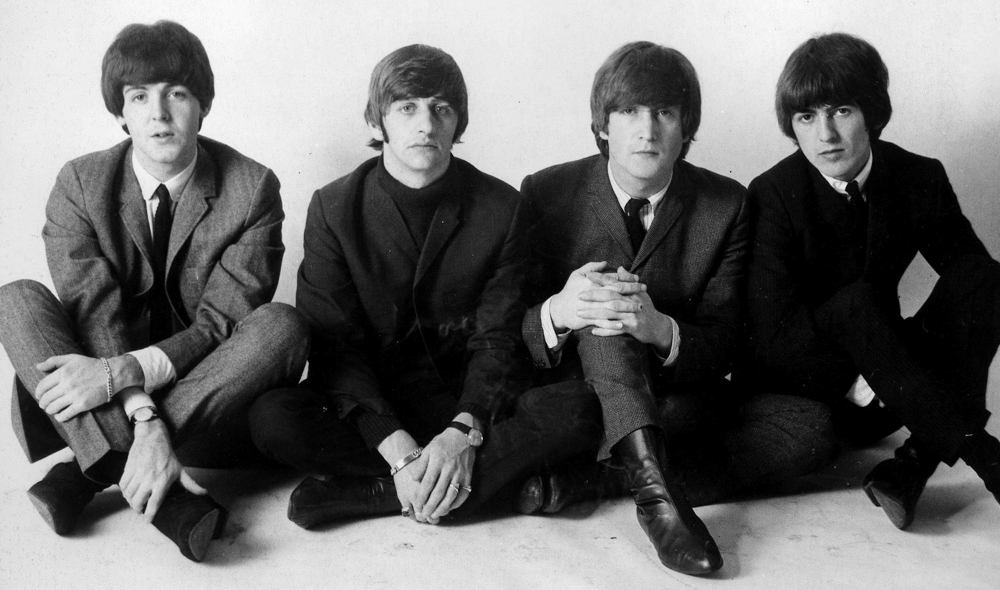
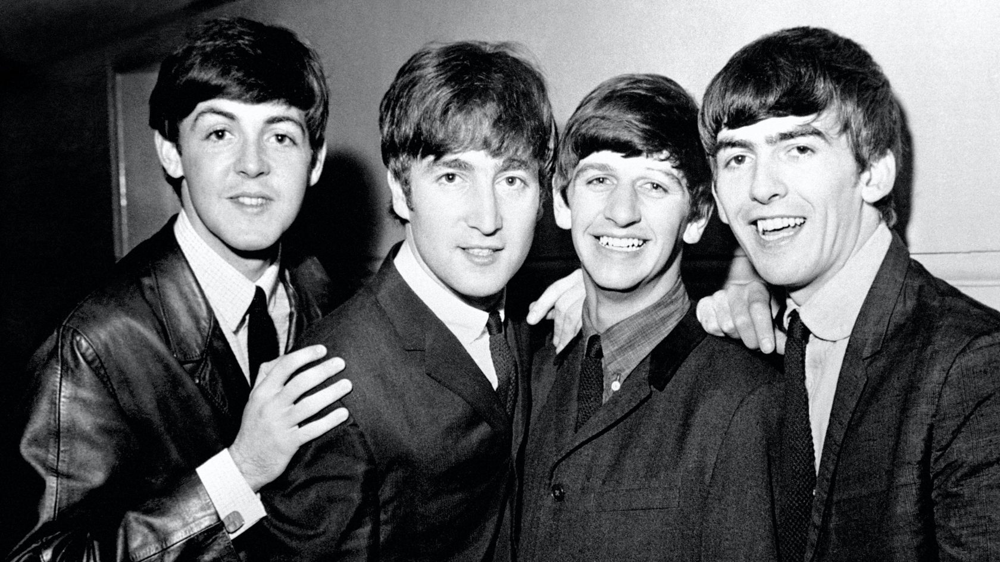
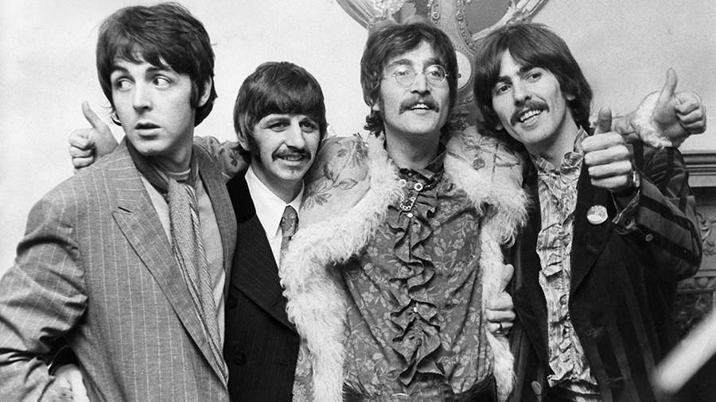
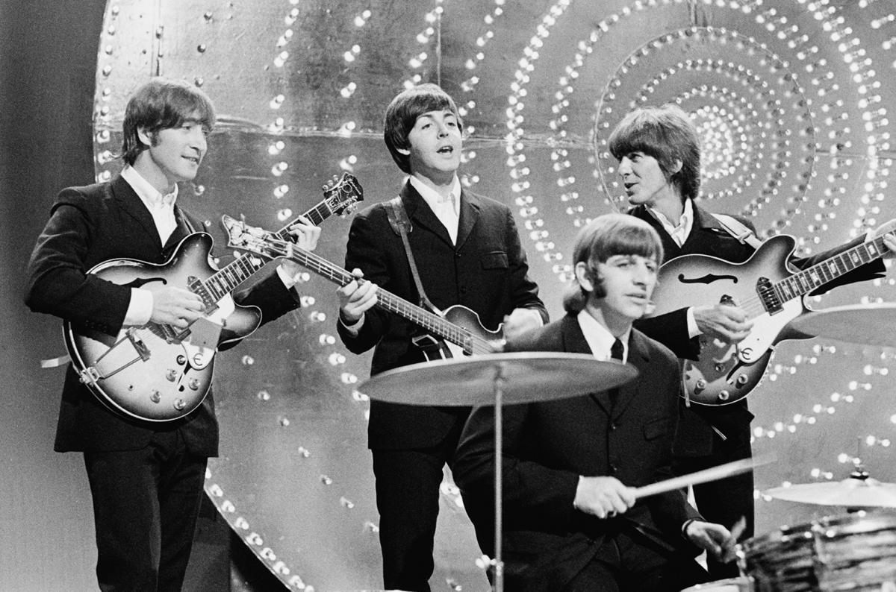
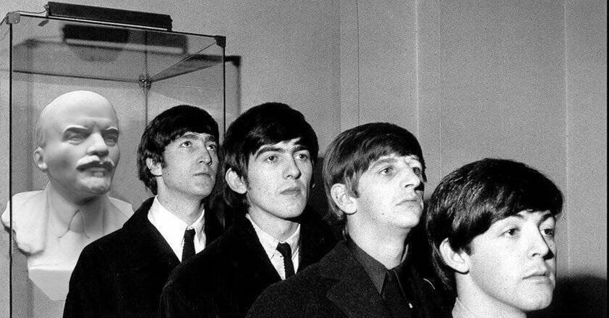
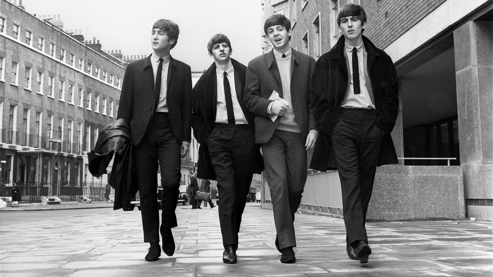
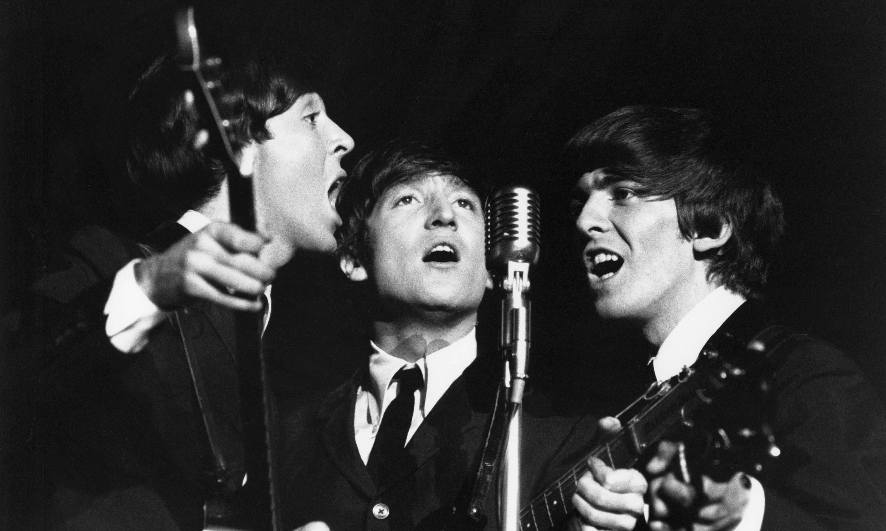

Об участниках
Джон Леннон — главное лицо битлов, появившееся на свет 9 октября 1940-го и покинувшее его спустя 40 лет 8 декабря 1980-го. Детство музыканта было запятнано постоянными распрями между родителями, из-за которых он в конечном счете очутился на воспитании своей тетушки. Его мать Джулия, которая подарила сыну первую гитару, умерла 15 июля 1958-го, попав под машину. Хотя несчастье оставило неизгладимый отпечаток на мировоззрении Джона, оно же помогло ему подружиться с Полом Маккартни, который тоже рано потерял маму.
Биография Пола Маккартни значительно объемней, чем у Джона Леннона, хотя бы потому, что он уже прожил в два раза больше. Он родился 18 июня 1942-го и до 14 лет рос в любящей, слегка музыкальной семье. Мэри Маккартни, его мать, умерла в 1958-м. Пытаясь хоть как-то заглушить тоску, Пол и начал потихонечку перебирать гитарные струны. После битлов он сделал внушительную музыкальную карьеру и даже получил от королевы Англии титул сэра. О том, как это случилось, можно почитать в его биографии вот тут. Впрочем, может оказаться, что Пол умер еще в 1966-м, как утверждают некоторые конспирологи: в таком случае все летописи его жизни окажутся некой фикцией.
Ударник Ринго Старр, одновременно и «звезда» битлов, и не «самый лучший барабанщик в составе», родился 7 июля 1940-го. Его имя при рождении звучало куда менее звездно, чем сейчас: тогда его звали Ричардом Старки. Чета Старки работала кондитерами, так что вы имеете право в шутку звать музыканта «сладкой булочкой». В детстве Ричард не отличался крепким здоровьем, из-за чего проводил больше времени в больницах, нежели за школьной партой. Одноклассники даже прозвали беднягу Лазарем после того, как он побывал в коме. Именно в одном из госпиталей хилого и грустного мальчика пригласили в группу и дали первый ударный инструмент. С этого момента Ричард начал мечтать о сцене: он видел лишь цель и игнорировал препятствия.
Остается Джордж Харрисон — соло-гитарист коллектива. Он родился 25 февраля 1943-го в многодетной, далеко не богатой семье. Гитарой он увлекся очень рано, обучился самостоятельно и именно благодаря этому хобби сначала познакомился, а потом и подружился с Полом Маккартни.
Правда, когда началась история The Beatles, и его приятель, и Джон Леннон смотрели на него свысока, — уж слишком юным он был. Целых 8 месяцев разницы — это очень серьезно! Невзирая на это, умения Джорджа помогли квартету добиться того звучания, которое впоследствии сделало из The Beatles основоположников нового стиля.
К сожалению, музыканта не стало 29 ноября 2011 года его. После The Beatles он занимался сольной карьерой и приложил руку даже к киноиндустрии, благодаря чему получил посмертную BAFTA за выдающийся вклад в развитие киноискусства.
К началу страницы
Молодые годы
Легендарная группа «Битлз» зародилась в 1959 году в Великобритании, в городе Ливерпуле. В самый первый состав группы входили Пол Маккартни (бас-гитара, гитара, вокал), Джон Леннон (гитара, вокал), Джордж Харрисон (гитара, вокал), Стюарт Сатклифф (бас-гитара), Пит Бест (ударные).
Поначалу группа была известна только в Ливерпуле, затем, когда в 1960 году музыканты уехали в Германию, на них обратил внимание Тони Шеридан, который был в то время очень известным исполнителем рок-н-ролла. Вместе с «Битлз» Шеридан записал студийный альбом "Тони Шеридан и Битлз". Именно тогда в творческой биографии «Битлз» произошел первый серьезный дебют на международном уровне.
После совместного проекта с Шериданом группой заинтересовался Брайен Эпштейн, владелец магазина грампластинок. С осени 1961 года он стал их менеджером. Когда в декабре 1961 года из группы ушел Стюарт Сатклифф, «Битлз» стали квартетом. Затем состав группы претерпел еще одно изменение: записывающая компания, с которой вел переговоры Эпштейн, за свое согласие сотрудничать с «Битлз» потребовала сменить барабанщика Пита Беста.
Первый авторский сингл "Битлз", называвшийся "Love me do", был записан на малоизвестной в то время звукозаписывающей студии "Парлофон" в декабре 1962 года. Брайан Эпстайн, стремясь вызвать интерес публики к новому хиту группы, сделал довольно рисковый шаг - сам скупил первые десять тысяч экземпляров. Эта коммерческая хитрость удалась – интерес к мигом разлетевшейся пластинке привлек массу покупателей. Первый в биографии «Битлз» самостоятельный альбом вышел в начале 1963 года. Уже к 1964 году весь мир был без ума от «Битлз».
Официальным «днем рождения» феномена «битломании» считается день выступления «Битлз» в лондонском зале «Палладиум» 13 октября 1963 года. Их концерт транслировался по телевидению и собрал около пятнадцати миллионов зрителей. При этом тысячи фанатов группы вместо просмотра телепередачи предпочли собраться у здания концертного зала, надеясь увидеть своих кумиров в жизни.
4 ноября того же года «Битлз» выступили в театре Принца Уэльского. Их выступление стало гвоздем программы Королевского варьете. Сама королева-мать выразила восхищение исполненной «Битлз» песней «Till There Was You».
Вскоре вышел второй альбом «Битлз» под названием «With The Beatles», который побил все существующие рекорды по количеству предварительных запросов на покупку. К 1965 году было распродано более одного миллиона экземпляров альбома.
В 1963—1964 годах «Битлз» покорили Америку. Они стали первой английской группой, которая имела такой оглушительный успех «за океаном». Причем компания «Парлофон» не рискнула выпускать синглы группы в США, именно по причине недолгой популярности в Штатах практически всех музыкантов из Великобритании. Брайан Эпстайн пытался привлечь внимание американской публики, выпустив синглы «Please Please Me» и «From Me To You» и альбом «Introducing The Beatles», но успеха они не имели.
Популярность пришла после выхода в США в конце 1963 года сингла «I Want To Hold Your Hand». Один из известных музыкальных критиков после этой песни назвал Леннона и Маккартни «величайшими композиторами после Бетховена». В январе 1964 года в США был выпущен альбом «Meet the Beatles!», который уже в феврале получил статус «золотого».
Квартет отправился на гастрольные выступления в США, где они дали три концерта, а также дважды стали участниками популярной телепрограммы «Шоу Эда Салливана». «Битлз» собрали у экранов телевизоров сорок процентов населения США – это около семидесяти трех миллионов человек. Этот факт биографии «Битлз» является одним из знаковых: такое количество теле аудитории было зафиксировано впервые за всю историю телевидения.
Это был период разгара «битломании»: их следующий творческий проект, музыкальный фильм «Вечер трудного дня" и одноименный альбом, получили три миллиона предварительных заявок, заграничные гастроли проходили с триумфальным успехом. «Битлз» были названы «лучшими композиторами-песенниками со времён Шуберта».
Однако вскоре квартету пришлось покончить с концертными выступлениями: публика готова была порвать на части своих идолов, фанаты не давали музыкантам прохода, поэтому «Битлз» были практически изолированы от всего мира. В 1965 году мировая популярность показала свою обратную сторону: начались акции протестов против «Битлз», сжигались их пластинки, портреты, одежда. Неосторожные высказывания членов группы приводили к скандалам национального масштаба. Кроме того, сцена ограничивала их творческое развитие – изо дня в день они исполняли одни и те же песни, по условиям контракта не имея права отступать от программы. Сценическая биография «Битлз» закончилась, и музыканты решили полностью посвятить себя студийной работе. 5 августа 1966 года вышел один из лучших альбомов The Beatles — «Revolver». Альбом отличался прежде всего тем, что большинство его песен не предполагали сценического исполнения — настолько сложны здесь использованные студийные эффекты.
В 1967 году был записан монументально-новаторский альбом «Битлз» под названием "Клуб одиноких сердец сержанта Пеппера". Это был настоящий переворот в мире рок-музыки: альбом был первым толчком к появившимся впоследствии новым музыкальным направлениям, таким как apт-poк, хард-рок и психоделия.
К началу страницы







Зрелые годы
В июне 1967 года концерт «Битлз» транслировался по всему миру. В этом они тоже стали первыми – около четырехсот миллионов человек видели их выступление, такого грандиозного успеха не добивался еще ни один музыкальный ансамбль. Во время выступления была записана видеоверсия песни «All You Need Is Love». Вскоре после этого триумфального успеха произошла трагическая смерть «пятого битла» менеджера группы Брайана Эпстайна. Дела группы пошли на спад.
В 1968 году группа выпустила двойной альбом, который впоследствии стал известен среди поклонников группы как «белый альбом» из-за оформления обложки. Альбом имел огромную популярность, однако именно во время работы над ним в группе появились первые признаки последующего распада. Атмосфера стала накаляться, между музыкантами время от времени происходили скандалы. способствовало улучшению состояния группы.
В 1969 году группа выпустила одну из лучших своих песен — «Hey Jude». Сингл занял верхние строчки хит-парадов по всему миру и разошелся шестимиллионным тиражом.
В феврале 1969 года отношения в группе окончательно разладились из-за разногласий по поводу нового менеджера. Маккартни подал в суд на собственную группу. Однако впоследствии группа выпустила еще один шедевр своего творчества – альбом «Abbey Road», который считается их последней совместной работой (вышедший в 1970 году альбом «Let It Be» включал старые записи группы).
В апреле 1970 года, одновременно с выпуском сольного диска Пол Маккартни официально заявил, что «Битлз» больше нет. Величайшая рок-группа мира распалась. В 1979 году Маккартни предпринимал попытки воссоединить группу в прежнем составе. Но этому никогда не суждено было случиться - годом позднее был убит Джон Леннон.
К началу страницы
.jpg "группа The Beatles")